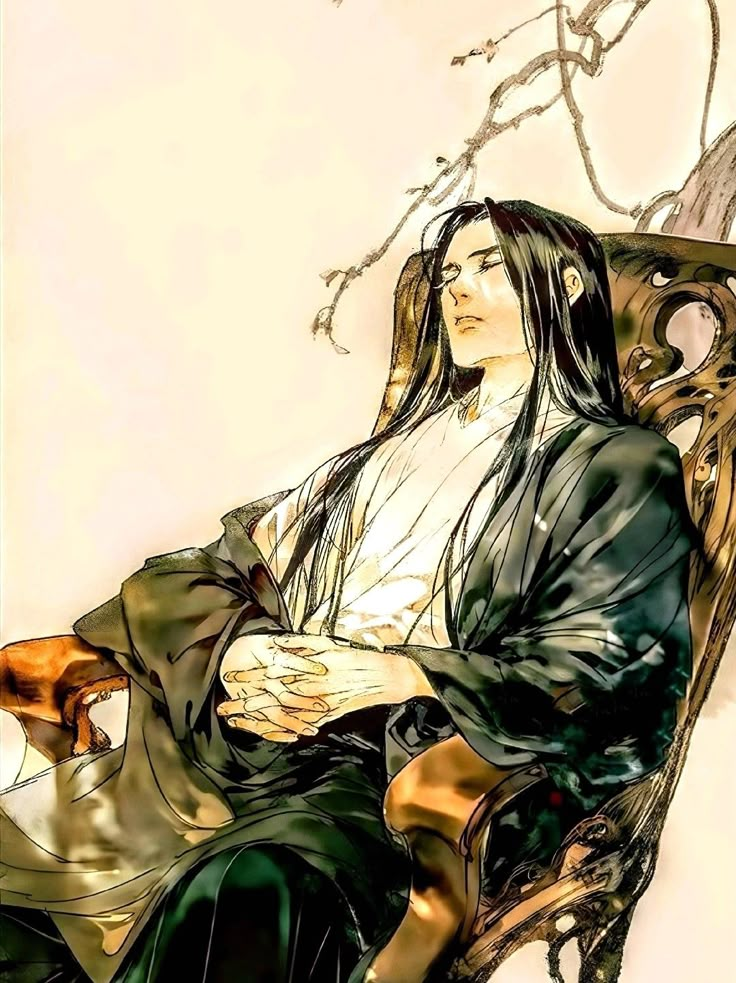
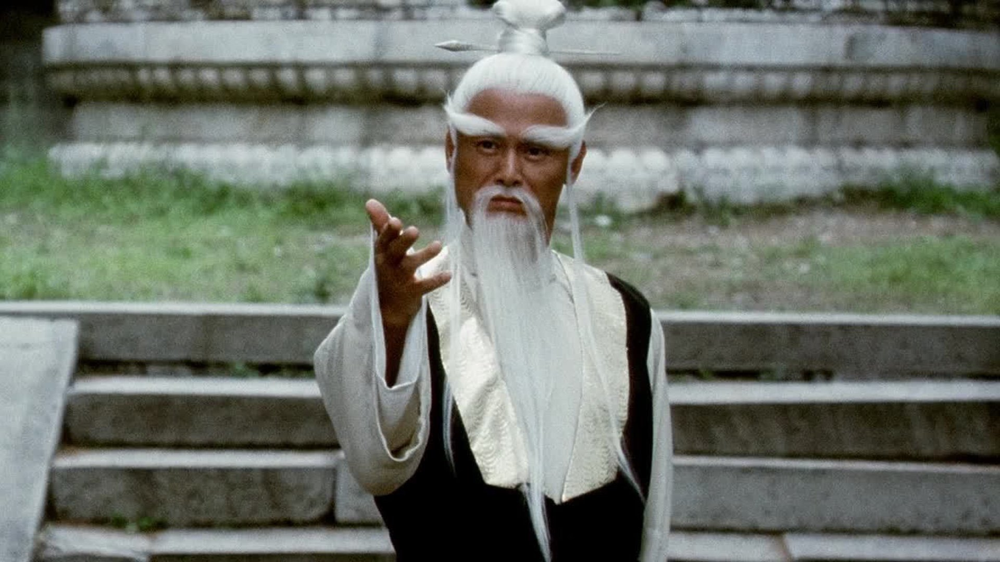
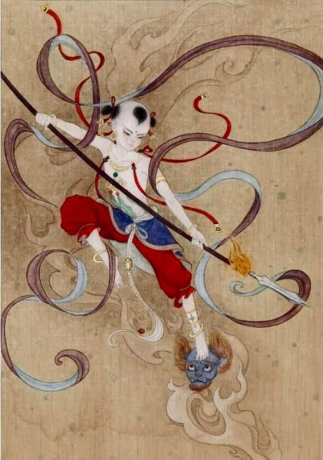

Trajuan Smith
World Map & Mission Detail Developer
Responsible for developing the World Map and Mission Detail pages, including region navigation, mission selection, and CSS-only mission progress controls.
Those walking the Path of Ascension together

Blue Mountain Sect's Senior Disciple
Foundation Establishment
A kindhearted cultivator who always values the well-being of others.

Blue Mountain Sect's Elder
Golden Core
A caring and merciful elder who always treasures his young disciples and guides them on their journey.

Blue Mountain Sect's Youngest Disciple
Qi Refinement
A polite and respectful young cultivator who is always eager to help strangers in need.
In the world of cultivation, practitioners strive to ascend through various realms of power and enlightenment. Each realm represents a significant milestone in a cultivator's journey, with unique abilities and responsibilities.
All seeking the path of ascension must dedicate themselves to rigorous training, meditation, and the pursuit of wisdom to progress through these ranks. Immortality is the ultimate goal, where one transcends the mortal plane and achieves eternal life and profound understanding of the universe.
Meet the cultivators behind Path of Ascension.
World Map & Mission Detail Developer
Responsible for developing the World Map and Mission Detail pages, including region navigation, mission selection, and CSS-only mission progress controls.
Homepage & Team/About Developer
Responsible for developing the homepage and Team/About page, including the Journey Tracker, character profiles, and cultivation realm display.